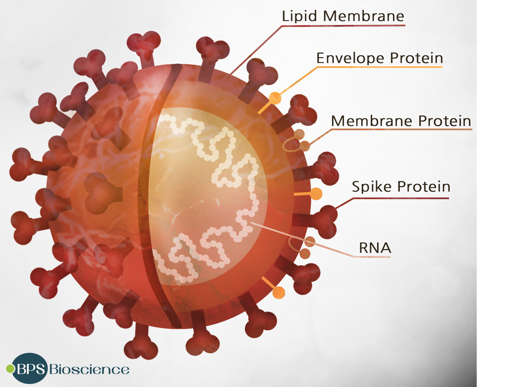

| 정의 |
SARS-CoV-2 감염에 의한 호흡기 증후군 |
| 질병 분류 |
- 법정감염병 : 제1급감염병 신종감염병증후군
- 질병 코드 : U07.1
|
| 병원체 |
SARS-CoV-2 : Coronaviridae에 속하는 RNA 바이러스
 |
| 전파 경로 |
현재까지는 비말(침방울), 접촉을 통한 전파로 알려짐
- 기침이나 재채기를 할 때 생긴 비말(침방울)을 통한 전파 등
- 코로나19 바이러스에 오염된 물건을 만진 뒤 눈, 코, 입을 만짐
|
| 잠복기 |
1~14일 (평균 4~7일) |
| 진단 기준 |
- 환자 : 진단을 위한 검사기준에 따라 감염병병원체 감염이 확인된 사람
- 진단을 위한 검사기준
- - 검체에서 바이러스 분리
- - 검체에서 특이 유전자 검출
|
| 증상 |
발열, 권태감, 기침, 호흡곤란 및 폐렴 등 경증에서 중증까지 다양한 호흡기감염증이 나타남
그 외 가래, 인후통, 두통, 객혈과 오심, 설사 등도 나타남 |
| 치료 |
- 대증 치료 : 수액 보충, 해열제 등 보존적 치료
- 특이적인 항바이러스제 없음
|
| 치명률 |
- 전세계 치명률은 약 3.4%(WHO, 3.5 기준)
단, 국가별 · 연령별 치명률 수준은 매우 상이함
- 고령, 면역기능이 저하된 환자, 기저질환을 가진 환자가 주로 중증, 사망 초래
|
| 관리 |
환자 관리
- 표준주의, 비말주의, 접촉주의 준수
- 증상이 있는 동안 가급적 집에서 휴식을 취하고 다른 사람과 접촉을 피하도록 권고
접촉자 관리
|
| 예방 |
- 백신 없음
- 올바른 손씻기
- - 흐르는 물에 비누로 30초 이상 꼼꼼하게 손씻기
- - 특히, 외출 후, 배변 후, 식사 전·후, 기저귀 교체 전·후, 코를 풀거나 기침, 재채기 후 등에는 반드시 실시
- 기침 예절 준수
- - 기침할 때는 휴지나 옷소매 위쪽으로 입과 코를 가리고 하기
- - 호흡기 증상이 있는 경우 마스크 착용
- 씻지 않은 손으로 눈, 코, 입 만지지 않기
- 주위 환경을 자주 소독하고 환기하기
|